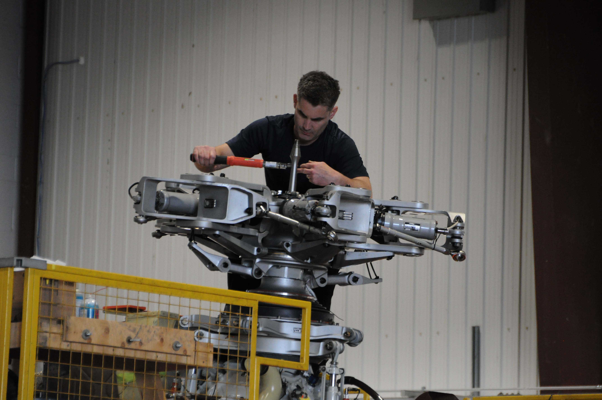

Feb 9, 2026:
Images from the spring/summer of 2025 in Toronto (pronounced "Churonno").
Helicopter mechanic at Billy Bishop Airport. I was here for 'Doors Open Toronto'.
DHC-8 engine with maintenance cover open. Also at Billy Bishop.
DHC-8 landing at Billy Bishop. This image taken from the CN Tower.
Looking down the streetcar tracks on Spadina.
Streetcar! Not sure where this one is from.
I think this one is neat.
Unintentional blur that ended up looking cool.
These next set of images are from Tommy Thompson Park
Coyote! Could not get a good shot before it ran away. This is the least bad one.
Eaton Centre
High Park Zoo
Ontario Legislature. Another image made possible by 'Doors Open Toronto'
Toronto City Hall.